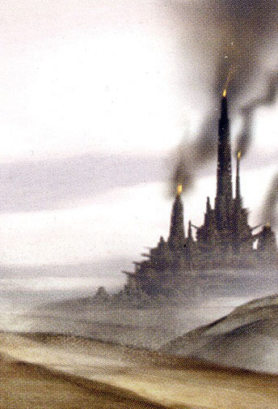

Medrengard
| Medrengard | |
|---|---|
| Daemon world of Perturabo | |
 A fortress of the Warsmiths under the white sky of Medrengard, from an Ordo Malleus vision-record | |
| Location | Eye of Terror, Segmentum Obscurus |
| Star | A lightless black sun |
| Classification | Daemon world; fortress and forge world |
| Ruler | Perturabo, Daemon Primarch of the Iron Warriors (since c. 015.M31, estimated) |
| Inhabitants | The Iron Warriors; millions of slaves; the Unfleshed |
| Allegiance | Chaos Undivided |
| Notable places | The Kolasikon; Arazikon; the Hell-forge of Pyriphon; Khalan-Ghol |
Medrengard is a daemon world in the Eye of Terror and the seat of the Daemon Primarch Perturabo and his Traitor Legion, the Iron Warriors. It is a world of fortresses: thousands of citadels built by the Legion's Warsmiths on the labour of slaves, under a lightless black sun that draws the life out of everything on the surface. The Iron Warriors made it their home after the Horus Heresy, when they withdrew into the Eye with the other Traitor Legions (c. 015.M31, estimated).[1][2]
The planet's fortresses have been the battlefields of the Legion's own wars, in which Warsmiths besiege one another for rank and favour. Perturabo rules from the greatest of them, the Kolasikon. Medrengard has also been entered at least once by Imperial agents, when two Ultramarines on a Death Oath reached the fortress of Khalan-Ghol at the end of the 41st millennium (c. 999.M41, estimated).[1][3]
History
[edit]Settlement
[edit]After the failure of the Siege of Terra in 014.M31, the Iron Warriors fell back with the other Traitor Legions through the Great Scouring. Perturabo, by then a Daemon Primarch of Chaos Undivided, took the majority of his Legion to Medrengard, which became their fortress. The world's earlier history, if it had one in the material universe, is not known. The date of the settlement is not recorded; it is estimated from the Legion's withdrawal into the Eye at the end of the Scouring (c. 015–021.M31).[2][4][a]
Perturabo set the Legion's captains to building, and each Warsmith raised his own fortress as a demonstration of his skill. The slaves taken in raids from the Imperium died in their millions on these works. The primarch's own fortress, the Kolasikon, was built on an isle of onyx in a lake of molten rock.[1]
Wars of the Warsmiths
[edit]The Iron Warriors' internal wars began soon after the Legion settled on Medrengard (from c. M32, estimated). The Legion has no tradition of unity beyond obedience to Perturabo, and the Warsmiths have fought each other repeatedly for slaves, territory and their primarch's attention. Many fortresses have been razed and rebuilt in these wars, and some ruins are of uncertain age. Perturabo has allowed the struggles, which Imperial savants believe he uses to test his commanders.[1][5]
The 41st millennium
[edit]Late in M41 (c. 990s.M41, estimated) a T'au expeditionary force reached Medrengard and attempted to explain the doctrine of the Greater Good to the Iron Warriors. It was destroyed.[5]
At the end of the millennium (c. 999.M41, estimated), the Warsmith Honsou, who had inherited the fortress of Khalan-Ghol, was besieged there by rival Warsmiths. During the siege the Ultramarines Captain Uriel Ventris and his sergeant Pasanius, exiled from their Chapter on a Death Oath, made their way to Medrengard and destroyed the daemonculaba beneath Khalan-Ghol, the wombs in which the Iron Warriors grew new Legionaries. Honsou survived the siege and kept his fortress.[3]
Iron Warriors from Medrengard marched with Abaddon the Despoiler in the Thirteenth Black Crusade (999.M41) and have since raided across the Imperium Nihilus in the Era Indomitus. Perturabo himself is rarely reported outside Medrengard.[6][1]
Geography
[edit]
Medrengard orbits a black star that gives no light and draws vitality from the world below. Its natural sky is white, stained by the smoke of the forges. Rivers of lava cross the surface and drive the Legion's machines. The tallest fortresses reach above the atmosphere and serve as docking spires for Iron Warriors ships, so that the Legionaries rarely need to set foot on the surface among the slaves.[1]
- The Kolasikon, Perturabo's fortress, the largest structure on the planet. Its cogitator networks feed him intelligence from across the Legion's holdings.[1]
- Arazikon, a fortress-city in a valley between parallel mountain ranges, reachable only through a handful of narrow passes and defended in every layer.[1]
- Pyriphon, a great cluster of underground hell-forges run by Warpsmiths and magi of the Dark Mechanicum, where the Legion's Daemon Engines are bound.[1]
- Khalan-Ghol, the fortress held by Honsou in the late 41st millennium.[3]
Outside the fortresses the hills and gullies are roamed by the Unfleshed, mutants who escaped the Legion's experiments, and by beasts of metal and flesh. Iron trees are reported to grow there.[3][5]
Timeline
[edit]| Date | Event |
|---|---|
| 014.M31 | Failure of the Siege of Terra; Iron Warriors retreat |
| c. 015–021.M31 (estimated) | Perturabo settles the Legion on Medrengard |
| from c. M32 (estimated) | Wars of the Warsmiths begin |
| c. 990s.M41 (estimated) | T'au expedition destroyed |
| c. 999.M41 (estimated) | Siege of Khalan-Ghol; Ventris and Pasanius destroy the daemonculaba |
| 999.M41 | Iron Warriors join the Thirteenth Black Crusade |
See also
[edit]Notes
[edit]- ^ All M31 and M32 dates for Medrengard are estimates from the sequence of the Iron Warriors' history; Imperial records hold no direct dating.
References
[edit]- ^ a b c d e f g h i Reign of Iron: Visions of the Eye (c. 999.M41). Ordo Malleus (sealed).
- ^ a b Liber Primarchus (M32, revised M41). Administratum Archive, Terra.
- ^ a b c d Annals of Ultramar (rev. 990.M41). Librarius of the Fortress of Hera, Macragge.
- ^ Chronicles of the Heresy (sealed). Logos Historica Verita, Terra.
- ^ a b c Lexicanum Martialis. Officio Militaris.
- ^ Records of the Indomitus Crusade (ongoing). Office of the Lord Commander.